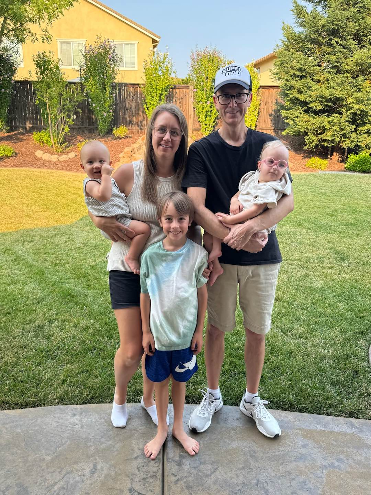
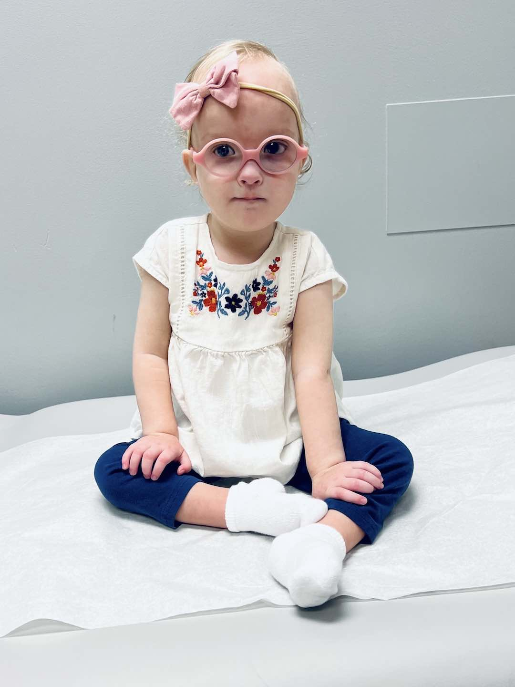
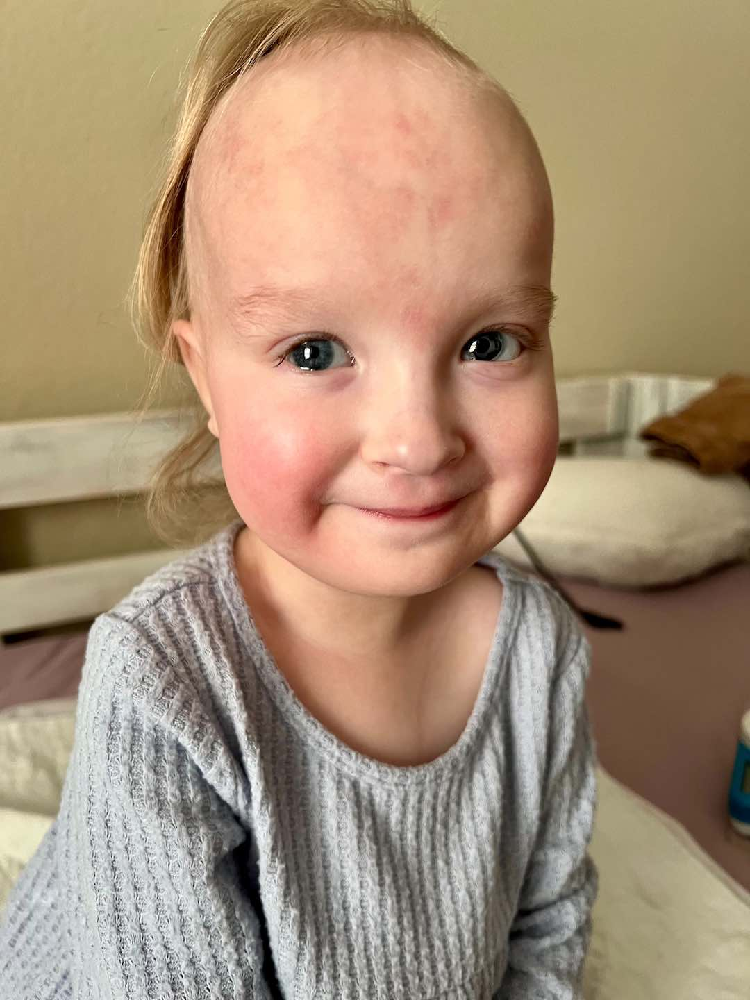
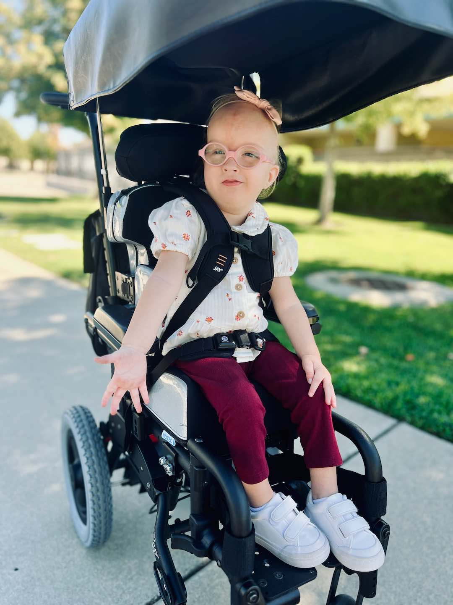
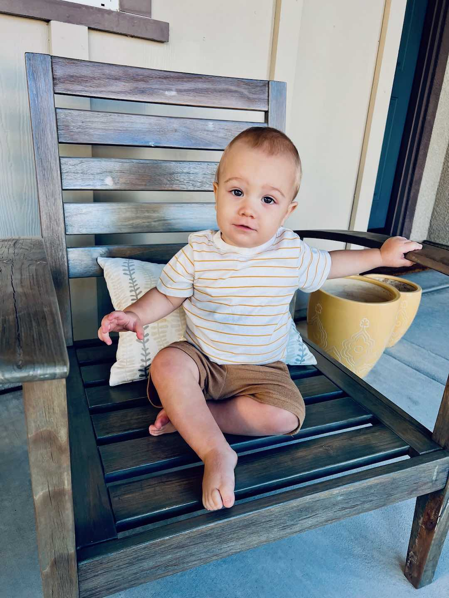

Year In Review
2024 was a year of many ups and downs in our household! Like any modern family there was often laughter and sometimes tears, times of relaxation and periods of extreme stress. In the end, memories were made, lessons were learned and the world keeps on turning. We all continue to adapt to life as a party of five, where we are discovering that logistics for just about everything are continually thrown a new wrinkle. Highlights from our year included...In June, we rented a minivan and embarked on the long drive to The Los Piños Del Mar, the premier resort destination in San Diego County. Along the way me made a stop near San Luis Obispo to visit Kendra's former client and friend, Betsy, who has since sadly passed away at the age of 99. During our week-long vacation we spent an entire day circumnavigating the famous San Diego Zoo, observing every species of animal they had to offer and rode the overhead aerial tram more times than one can count. We also enjoyed a few fun-filled days at the nearby beaches and around the heated pool. Pinochle playing friends Sonja & Peter also made an appearance to join in for another memorable signature dining experience and proved formidable challengers at the card table.
In August, we enjoyed a family vacation in Lake Tahoe. Greg's mom graciously reserved an oversized cabin and Greg's sister and her family also joined. The trip included an eventful rafting adventure down the Truckee river. At the start, a surprise thunderstorm drenched everyone in the raft. Then a lighting strike started a forest fire in the surrounding hills and we witnessed a fire plane and helicopter fight the blaze. As we neared the end of the ride the sun finally came out and dried us off, but the section of rapids nearly ejected everyone from the raft. The next day we went on a hike to the top of Eagle Rock for a beautiful view of the lake and spent the afternoon testing the cool waters at the beach. We played fun games at the spacious house and a great time was had by all.
Kendra continues to volunteer at the elementary school as a room mom and has been serving as the art and science docent in several classes. She was in charge of organizing the school's annual fall carnival and specializes in event coordination and fundraising for the parent/teacher association. She feels blessed by her wonderful family and treasures every single day at home with her children. There is no limit to the efforts she makes to enable everyone around her to thrive.
In other news, Greg started a new job this year consulting for the United States Trotting Association after his 25 years of employment at TrackMaster came to a close. He had the opportunity to travel to their home offices in Columbus, OH on a couple occasions and also attended the historic Little Brown Jug harness race while there. He continues to frequent the local casino, refining his system for playing video poker and earning many valuable player points. Greg & Kendra both looked forward to the beginning of a new year and the chance to celebrate 10 years of marriage.


- 

Aaron
Aaron turned 8 on August 21st and is in the 3rd grade at Sunset Ranch Elementary with the same teacher as last year. We have heard he is a delight to have in class and quite helpful to all his classmates. So far this school year he has mastered his times tables up to 12 and is working on his cursive writing license. He became obsessed with reading a trilogy of science fiction novels about a wild robot, purchasing the books with his birthday money and even portrayed the main character for halloween.This year, Aaron discovered his extreme passion for ice hockey. After witnessing a game on television last winter a spark was ignited inside of him for the notoriously rough and frigid sport. Not having ever set foot on ice before he started out with a learn to skate program and slowly worked his way to the point where he is now in hockey practice twice a week and exhibiting a mastery of skills. His aspirations are to some day be a professional goalie. He continues to amaze us with his grit and determination to take on new challenges and achieve his goals.
Aaron attended his first NHL hockey game in San Jose, receiving a souvenir puck from a player and getting featured on the television broadcast where his family recognized him from home. Sadly, the home town Sharks were unable to score any goals. He also attended another 49ers football game, a yearly tradition with his father, this time under the lights for a nationally televised Monday night contest. He also requested a return visit to the Monterey Bay Aquarium to delight in the wonders of underwater life.
Aaron has become quite the role model, whether he likes it or not, to his little brother who follows him around like a shadow. Aaron has shown patience and understanding, but also frustration and annoyance at times. We predict plenty more strong bonds and sibling rivalry between them in the future.


Kelsie
Kelsie turned 4 years old on December 28th, marking another year of defying the odds with Wolf-Hirschhorn syndrome. She has experienced many gains and setbacks in her development, but was very proud to have acquired her very own custom pint-sized wheelchair which enables her to interact at a similar level to her peers and connect more easily with her environment. Kelsie is a very social child, delighting in "girl-talk" and loves being part of any spirited conversation or lively gathering of friends and family.After a long, drawn-out legal tussle with the local school district, Kelsie was finally permitted to start attending the preschool program at our home elementary school with general education peers in a least restrictive environment. Her older brother was so proud to accompany her to class on the first day and see her on the playground during breaks. Kelsie has utterly flourished in her new school setting and has made quite the impression on all the staff. She has been working on her sensory skills, tolerating touching things on her own, and has also been learning to make and communicate choices. Above all, she loves the daily interactions and attention from her teachers and peers.
This past year Kelsie had successful cataract surgery combined with an iridectomy to help improve vision in her bad eye. She appears to be seeing well with the aid of her glasses and has been more engaged with the people and objects around her. Additionally, by controlling her ketone levels with a specially calculated diet, there was a miraculous period of time where she was seizure free. Unfortunately, there were circumstances which caused a few setbacks in this area at various times. Through it all, she maintains a positive spirit and is generally a very happy little girl.

- 

- 

- 
Joseph
Joseph turned 1 on July 31st and had a year full of milestones achievements. He learned to crawl and, shortly thereafter, walk all around the house. He quickly mastered going up and down our stairs, opening doors and how light switches work. He is a very attentive listener and has begun to talk more, increasing his vocabulary daily and working on putting words together to form sentences.Our resident foodie, he loves meal time more than just about anything else. He insists on feeding himself and is expertly adept at using his fork and spoon to fill up on all his favorites. A typical breakfast for him might include a bowl of cereal, a buttermilk waffle, a handful of fresh blueberries, a fried egg over medium and a hamburger patty. He even has quite a few favorite treats, like his mom's homemade muffins or a scoop of premium ice cream, that he's not shy about asking for.
Jospeh is fascinated with the outdoors and loves playing at the park where he has already tested out the big slide. He thoroughly enjoys books, grabbing them off his shelf and plopping himself down in the nearest lap for story times, especially before bed. He follows his big brother around like a shadow, already hopping on a scooter and playing hockey in the kitchen. He also likes to copy his father by climbing up to the computer desk to type on the keyboard and by pulling out his toy vacuum from the closet to help tidy up.
Joseph has been such a wonderful addition to the family dynamic and is almost growing up too quickly! He has a delightful smile and his laughter enchants us all.

- 


Best wishes for a prosperous new year,
Greg, Kendra, Aaron, Kelsie & Joseph
Greg, Kendra, Aaron, Kelsie & Joseph